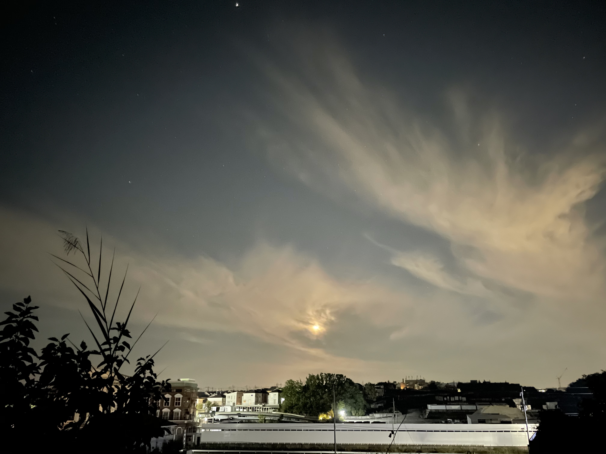

奈良県北の夜の空(2020/11/30)
方面へ向けて撮影
Infomation
web制作を初めてポートフォリオサイトを初めて作りました。
HTML/CSSのみで作っています。シンプルかつ軽いサイトが好きです。
例のごとくトップページはかなりシンプルです。
プロフィールはPROFILEに
twitter・FACEBOOK・Instagramはメニューリストの下のアイコンから。
問い合わせ等はCONTACTへ飛んでください。
趣味で撮っている写真をPHOTOに載せているので、お時間のある方は見てみてください。